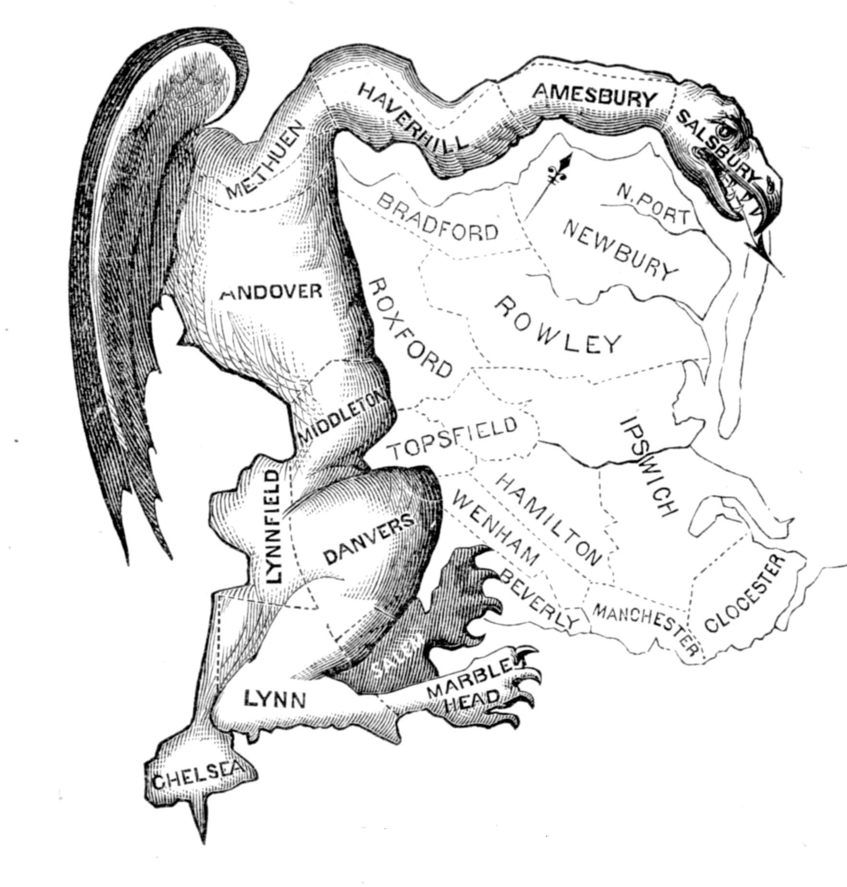

After reading this section, you should be able to answer the following questions:
Every two years the entire House of Representatives and one-third of the Senate face election. Congressional elections command far less attention from the media and voters than do presidential campaigns. However, their outcomes can determine the partisan composition of Congress, which can influence the course of public policy for decades to come. Americans can have a direct say in state policy proposals, laws, and constitutional amendments through ballot measures. They also can remove an elected official from office through a recall election.
Congressional elections, in which all 435 House seats and one-third of Senate seats are contested, take place every two years, including years when there is a presidential election. Midterm electionsElections held in nonpresidential election years that often are viewed as a referendum on the performance of the sitting president or the party controlling the House or Senate. occur in years when there is no presidential contest. Frequently, midterm elections are treated as referenda on the performance of the sitting president and can determine the balance of power in Congress. National issues, such as the economy and unemployment, can become prominent factors in midterm campaigns.
Since 1926, the president’s party has lost an average of thirty seats in the House and four seats in the Senate during midterm elections. The 2010 midterm election resulted in a sixty-three-seat swing and a shift in power in the House of Representatives. The Democrats lost control, as their membership dropped from 256 to 193 members, and the Republicans gained the majority, moving from 179 to 242 members. The Democrats, with fifty-three seats, maintained control of the Senate, although they lost six seats to the Republicans, who have forty-six seats. One seat is held by an Independent.Post Politics, “Election 2010: Live Results,” Washington Post, December 28, 2010, http://www.washingtonpost.com/wp-srv/special/politics/election-results-2010.
Party Voting in Congressional Elections by State
Maps depicting congressional election results from 2010 and earlier can be found at Politico.com and WashingtonPost.com.
Go to http://www.politico.com/2010/maps and http://www.washingtonpost.com/wp-srv/special/politics/election-results-2010.
Figure 11.14 Rand Paul at His Victory Celebration in 2010
Republican Rand Paul, an ophthalmologist, won the Senate race in Kentucky against Democrat Jack Conway, the state’s attorney general, with the backing of the Tea Party.
Source: Photo courtesy of Gage Skidmore, http://commons.wikimedia.org/wiki/File:Will,_Rand_%26_Ron_Paul.jpg.
Local and regional media are in the best position to cover congressional elections, and they can set the agenda for national media. Typically, there is less media coverage of midterm elections compared with presidential campaigns. The 2010 midterm election received more coverage than usual, as voters expressed frustration with incumbent president Barack Obama’s performance in office. The Tea PartyA grassroots movement with conservative leanings that emerged in 2009 to protest government taxing and spending policies.—a grassroots, conservative-leaning movement that opposed the government’s taxing and spending policies—staged protests that brought media attention to the election. Some Tea Party–backed candidates garnered significant national press attention.
There are one hundred senators in the US Congress, two elected from each state, who serve six-year terms. One-third of Senate seats are up for election every two years. Senators are constitutionally required to be at least thirty years old and to have been a US citizen for at least nine years when they take office.
Many Senate elections are competitive in both the primary and the general election. Having been in office for six or more years, incumbents have records, controversial votes, and may have upset some of their constituents. Their opponents may have name recognition, ample funding, and run an effective campaign using the new media and political advertising. Especially when the election is close, challengers receive almost as much visibility as incumbents. They are able to publicize their images, get some of their issues on the campaign agenda, and have attention paid to their attacks on their opponent.
Senate races in the 2010 midterm election were hotly contested. The majority of incumbents won, but many faced tough competition. Thirteen Democratic incumbents ran for reelection and three lost, while all eleven Republican incumbents seeking reelection won. Candidates spent record amounts of money contesting in Senate campaigns. Sharron Angle, who won the Nevada Republican Senate nomination with the backing of the grassroots Tea Party movement, spent ninety-seven dollars per vote in the general election, which she lost to Democrat Harry Reid, the majority leader of the Senate, who spent sixty-nine dollars per vote.T. W. Famam, “Angle, McMahon Led Way Spending $97 Per Vote—and Lost,” Washington Post, November 9, 2010.
There are 435 voting members of the House of Representatives elected in separate districts within states for two-year terms. Candidates must be at least twenty-five years old and need to have been a citizen for at least seven years.
Members of the House who are seeking reelection in districts designed to favor their party have an advantage. They usually have better organized campaigns, greater name recognition, far more funds, and more support from interest groups than their opponents. Since 1954, 93 percent of House incumbents have been elected. This rate dropped slightly in 2010, as 87 percent of incumbents were reelected, which is the lowest percentage since 1964.Benjamin Knoll, “Incumbent Losses in the 2010 Midterms,” Information Knoll, November 4, 2010, http://informationknoll.wordpress.com/2010/11/04/incumbent-losses-in-the-2010-midterms.
The media contribute to this incumbency advantageThe advantage generally enjoyed by sitting members of the House of Representatives in getting reelected to office due to better organized campaigns, greater name recognition, more funding, and support from interest groups.. Challengers often lack the funds to air political ads. News coverage of House elections favors incumbents. Local television coverage pays little attention to even to the most competitive House elections.Darrell M. West and L. Sandy Maisel, “Conclusion: Discourse and Beyond,” in Running on Empty? Political Discourse in Congressional Elections (Lanham, MD: Rowman & Littlefield, 2004), 237. Indeed, four thousand local television newscasts, in eleven major markets during the four weeks before the 2004 election, gave eight times as much air time to car crashes and other accidents than to House campaigns.“Local TV News Largely Ignores Local Political Races, New Lear Study Finds,” Lear Center Local News Archive, USC Annenberg School for Communication, February 15, 2005, http://www.localnewsarchive.org/pdf/LCLNARelease2005.pdf. The use of social media, such as Facebook and Twitter, can benefit challengers, especially if their messages are picked up by the mainstream press. However, many voters get most of the campaign information from television. Debates can sometimes improve a challenger’s chances if they are televised and widely seen. But nearly 70 percent of debates held by House candidates are not televised.Committee for the Study of the American Electorate, press release, May 16, 2001.
Each state is awarded a number of seats in the House of Representatives based on its population as determined by the national census, which is taken every ten years as required by the Constitution. If the census reveals shifts in the size of the population within districts, state legislators redraw the district lines to equalize the number of people within each district.
Figure 11.15 Gerrymander (Gerry-Mander)
In 1812, Massachusetts governor Elbridge Gerry pushed through electoral redistricting that ensured his Republican party’s majority in the township of Marblehead would outweigh the Federal majority in eleven other townships. Artist Elkanah Tisdale drew a cartoon map of the salamander-shaped district for the Boston Gazette and coined the term “Gerry-mander” (now “gerrymander”) that became a staple of political language. The visual and the term are therefore both media creations.
Redistricting is often a highly partisan and contentious activity because it can change the number of House seats each party wins in a state. The party in control of the state legislature can design districts so as to protect its incumbents and increase its House seats. The party in power can obtain more seats by having small but usually safe majorities in several districts and cramming large numbers of the other party’s voters into just a few districts. This is achieved through a gerrymanderTo draw congressional districts in such as way as to give one political party the advantage in electing its candidates., drawing congressional district lines to give one party the advantage in electing its candidates to the House of Representatives.Mark S. Monmonier, Bushmanders and Bullwinkles: How Politicians Manipulate Electronic Maps and Census Data to Win Elections (Chicago: University of Chicago Press, 2001). Incumbents in gerrymandered districts are usually reelected.
Candidates in Fiction and Documentary Films
There are two types of film about candidates: Hollywood fiction seen by millions of people and documentaries seen by far fewer.Relevant is Bradley Hunt, “On the Campaign Trail: Depictions of Political Campaigns in Films,” paper submitted to Paletz’s “Politics and Media” seminar, April 16, 2001. In Hollywood films the candidates are glamorous and charismatic. They run for high office, usually the presidency or Senate. The focus is on their character. Either they are cynical and hypocritical from the start (the presidential candidate played by John Travolta in Primary Colors, 1998), or they become cynical and compromise their ideals and principles over the course of their campaigns (the senatorial candidate played by Robert Redford in The Candidate, 1972), or they are disillusioned career politicians trying but failing to change a corrupt campaign process (Warren Beatty as the senator up for reelection in Bulworth, 1998). Their campaign consultants use whatever tactics and techniques will win the election. The candidates have an adversarial relationship with the news media.
Documentaries offer a wider range of candidates and circumstances. The Perfect Candidate (1996) covers Republican Oliver North’s 1994 senatorial campaign in Virginia from the perspective of the candidate, his campaign manager, and a Washington Post reporter. The subject of Taking on the Kennedys (1996) is a Republican doctor running against Senator Edward Kennedy’s son Patrick for an open House of Representatives’ seat in Rhode Island. In I’m a Candidate (2001), two young men, one a black Republican in Georgia and the other a white Democrat in Cincinnati, challenge incumbent members of the House.
The candidates in the documentaries are idealists, even a bit naive. They have principles and policy preferences. Campaigning is an all-consuming activity requiring perseverance and the sacrifice of personal life. Money is crucial for their campaigns, and they spend a lot of time trying to raise it. They engage in retail politics: shaking hands, meeting people, visiting senior-citizen centers, and marching in parades. They struggle to break through to an indifferent electorate; yet, even after they have campaigned for several months, many people remain unaware of them. They are vulnerable to the news media, which defines and depicts them.
Hollywood movies and documentaries convey the drama and conflict of elections, the demands on the candidates, and the strategies required to have a chance of winning. But for the lived experience of a political campaign, watch the documentaries.
Many states offer people the opportunity to vote on ballot measures on proposed laws, ordinances, or constitutional amendments. Two types of ballot measures are the initiative and the referendum. In the 2010 midterm election, a total of 160 questions were considered on ballots in 37 states. Another type of ballot measure is the recall election, whereby voters can remove an elected official from office.
In a referendumA process whereby the state legislature refers a proposal to citizens who vote to either approve or reject the measure., the state legislature refers a proposal to citizens who vote to either approve or reject the measure. In every state except Delaware, amendments to the state’s constitution passed by the legislature go on the ballot automatically.Matthew Mendelsohn and Andrew Parkin, eds., Referendum Democracy: Citizens, Elites and Deliberation in Referendum Campaigns (New York: Palgrave, 2001). State legislatures put other measures on the ballot to let voters make a choice or to avoid deciding a controversial issue. Referenda also can work as an end run around decisions made by a state governor.
The initiativeA process whereby voters propose and pass laws to amend the state constitution or place a proposal on an election ballot. is similar to the referendum except that voters propose and pass laws and present them to the state legislature. Citizens also can propose an amendment to the state constitution. In some states, the legislature can adopt the proposal outright. In most cases, registered voters can place a proposal on the ballot, sometimes with a counterproposal from the state legislature. If the initiative wins a majority of the votes in an election, it goes into effect.
In recent years, initiatives have been passed to cap property taxes, curtail illegal immigration, and allow medicinal marijuana and euthanasia. California had sixteen initiatives on the ballot in 2004, including a proposal to spend $3 billion for research on human embryonic stem cells, which passed with 59 percent of the vote. In six states, citizens’ groups put on the ballot for a vote to an amendment to the state constitution that recognized marriage as between one man and one woman. In 2010, initiatives related to fiscal policy and taxes were most prevalent. The proposals differed vastly from lowering property taxes in Indiana to overturning a tax on soda in Washington.Pamela M. Prah, “Guide to State Ballot Measures for 2010,” Stateline.org, November 12, 2010, http://www.stateline.org/live/details/story?contentId=479649.
State Ballot Measures in the 2010 Elections
Voters in states considered over 160 ballot initiatives in the 2010 midterm elections, which are described on Stateline’s website at http://www.stateline.org/live/details/story?contentId=479649.
The initiative was originally designed to combat powerful interests such as those controlling the railroads in the nineteenth century.For its history and an evaluation of the arguments for and against the initiative, see Joseph F. Zimmerman, The Initiative: Citizen Law-Making (Westport, CT: Praeger, 1999). Today, initiatives are sometimes a way for wealthy individuals or interest groups to put policies into effect while bypassing the state legislature. Consulting firms specializing in initiative campaigns are paid to collect the signatures required to put a measure on the ballot.For criticisms of the initiative see Richard J. Ellis, Democratic Delusions: The Initiative Process in America (Lawrence: University Press of Kansas, 2002).
Critics attack initiatives for congesting ballots and confusing voters, and for their sometimes deceptive titles and descriptions. “Keep California Green” was the slogan for a proposition to keep taxes low on private golf courses. However, research shows that “the initiative has a significant impact on state and local government and in doing so pushes policy in the direction a majority of people say they want to go.”John G. Matsusaka, For the Many or the Few (Chicago: University of Chicago Press, 2004), xi.
Originally intended to root out corruption among elected officials, the recallAn election that allows voters to remove an elected officeholder. allows voters to remove public officials from office through a direct election. A recall is initiated when a designated number of voters sign a petition requesting a special election. Fourteen state constitutions provide for recall elections for state officials, and many localities have provisions for the recall of lower-level elected officials.
Figure 11.16 Governor Arnold Schwarzenegger

Movie action hero Arnold Schwarzenegger is elected governor of California in the recall election of 2003. This is a stellar example of how prominence in the entertainment media can be translated into visibility in the news media and victory in politics.
Source: Photo courtesy of the Federal Emergency Management Agency, http://commons.wikimedia.org/wiki/File:FEMA_-_33305_-_Community_Relations_workers _in_California.jpg.
Until 2003, only one governor, North Dakota’s Lynn J. Frazier in 1921, had been successfully recalled. In 2003, a California Republican congressmen initiated and mainly funded the recall of California’s Democratic governor Gray Davis for his alleged policy failings. Spurred by conservative talk-radio hosts, websites run by Republican operatives, disenchanted Democrats, and antitax organizations, and coordinated by e-mail, more than 900,000 eligible voters signed the petition to put the recall on the ballot. The ballot asked voters two questions: if the governor should be removed from office and who they would select from a list of candidates to replace him if the governor were recalled. The voters selected Republican Arnold Schwarzenegger to replace Governor Davis.
Congressional candidates run for either the Senate or the House of Representatives. There are no limits on the number of terms a member of Congress can serve. Senators are elected in states and Representatives in congressional districts in states. Congressional districts are based on the US census and are reconfigured periodically. Elections for the Senate tend to be more competitive than for the House, where incumbent officeholders have an advantage.
Ballot measures, consisting of the initiative and the referendum, are mechanisms that allow voters to have a more direct say in state laws, government proposals, and constitutional amendments. In certain states, voters can remove elected officials from office through a recall election.